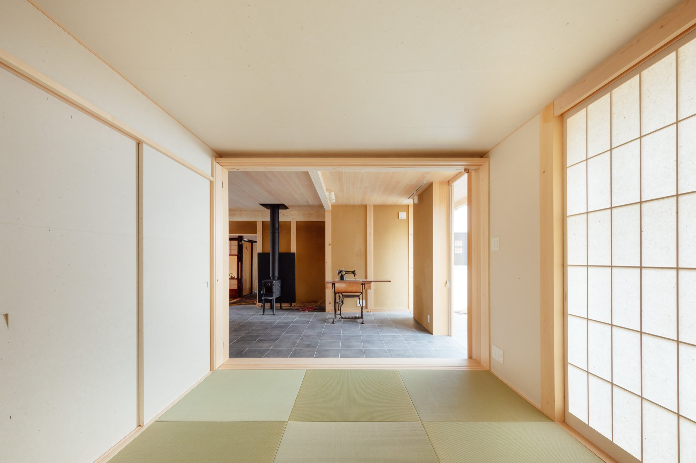
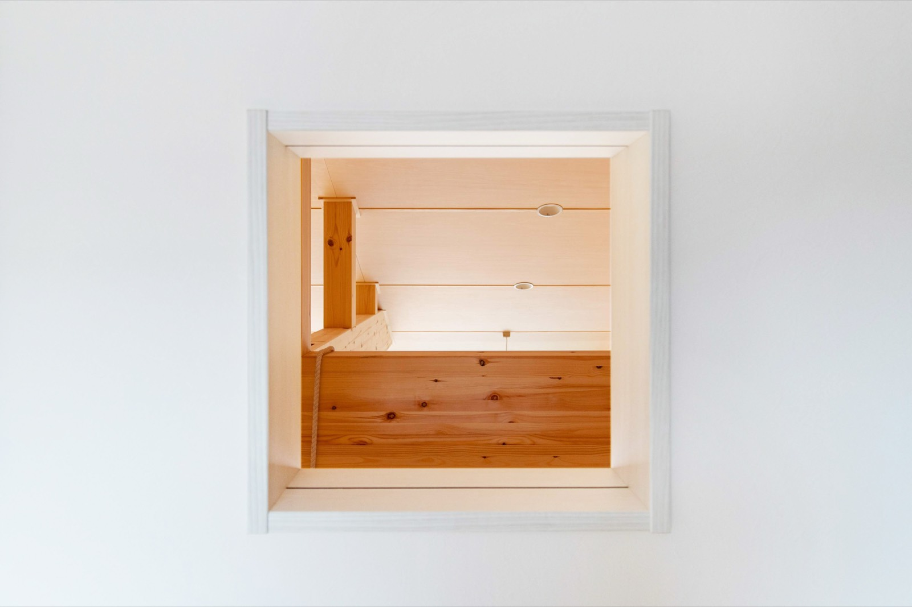
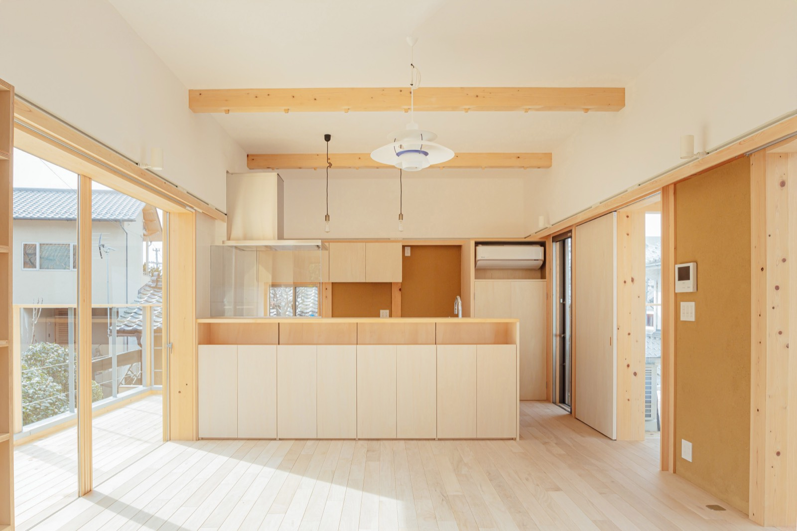
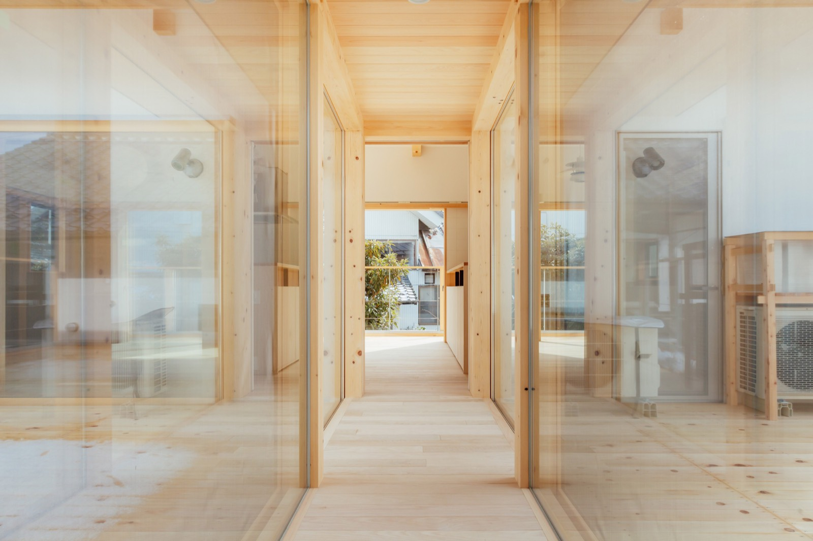
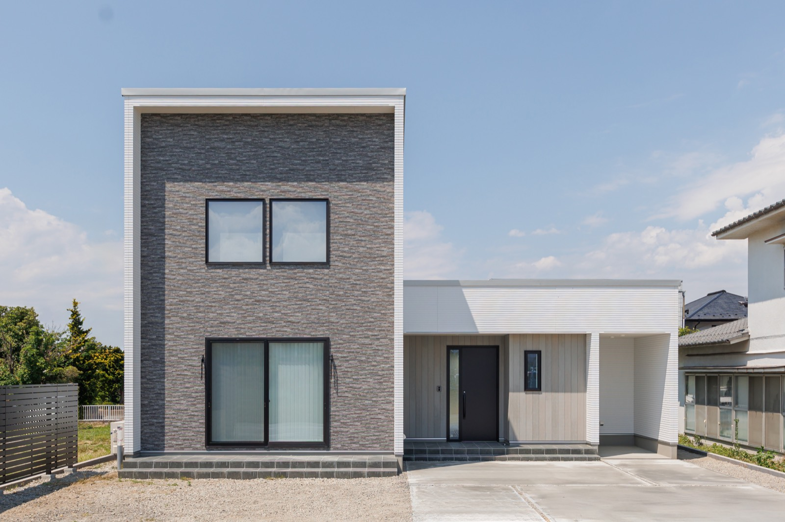
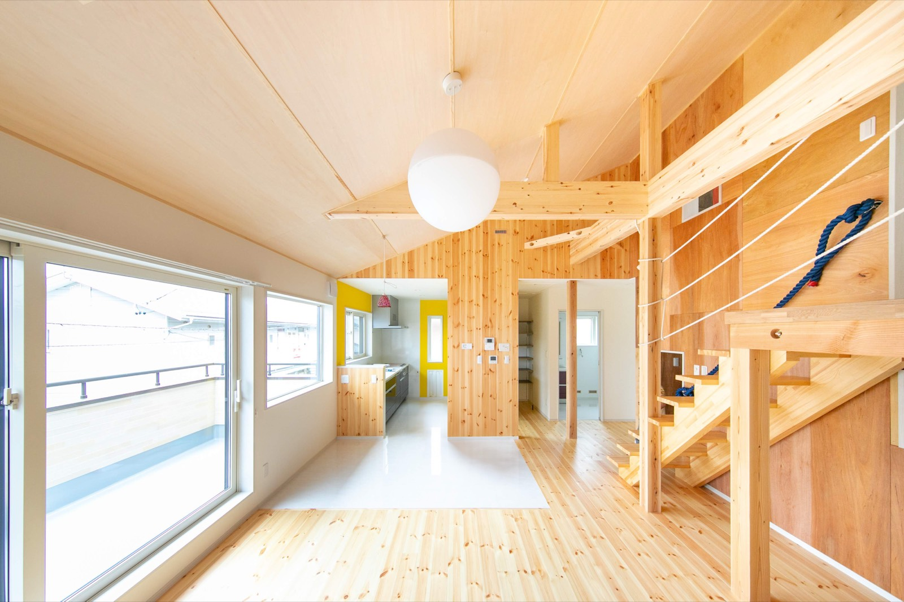
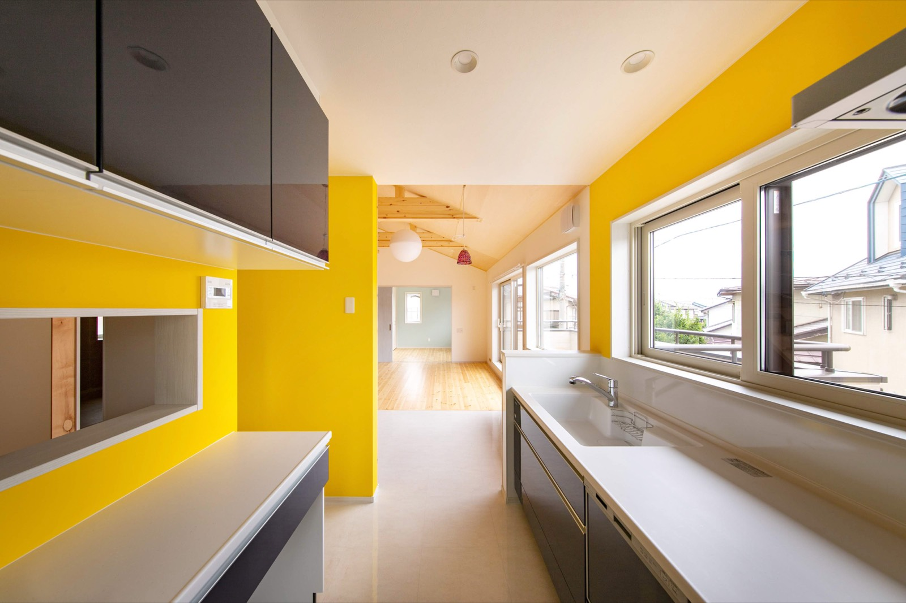
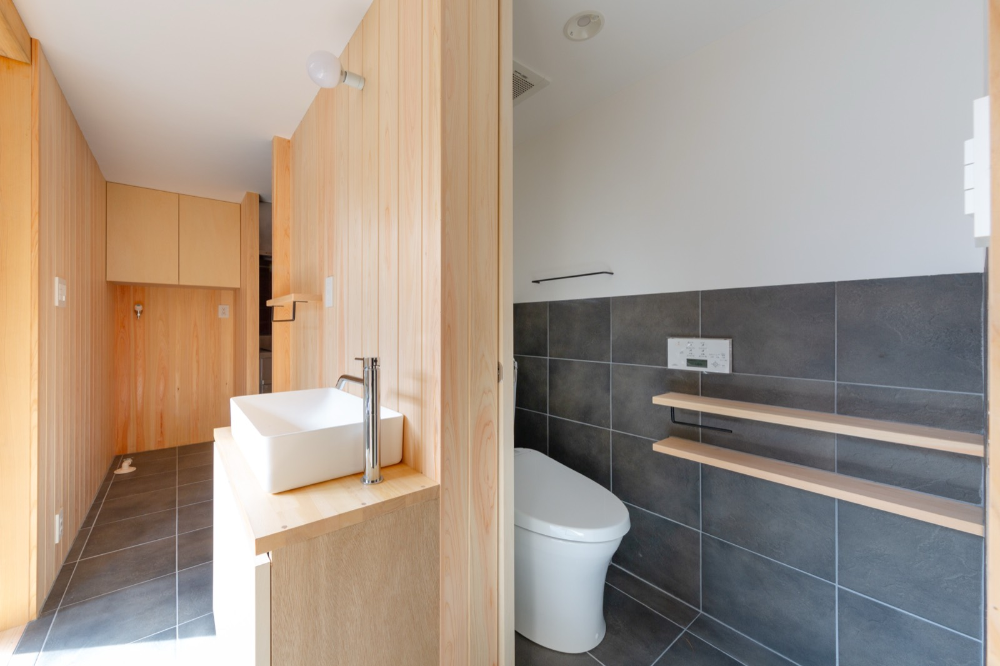

PHOTO IROHA ビジネス — 建築写真
設計を学び、現場を知っているから、
撮れる写真がある。
建築デザインを専攻し、東京のゼネコンでの勤務経験を持つカメラマンが撮影します。図面の意図や施工sideの視点を理解した上でファインダーを覗けるのは、この経歴があるからこそ。竣工写真では、施主様ご家族を入れたいというハウスメーカー様のご要望にも対応し、写真が苦手な方でも自然な表情に導きながら、あくまで「建物が主役」の構図の中に暮らしの温もりを添えます。
建築デザイン専攻 ／ 東京のゼネコン勤務経験
建物が主役

作例
6 PHOTOS




